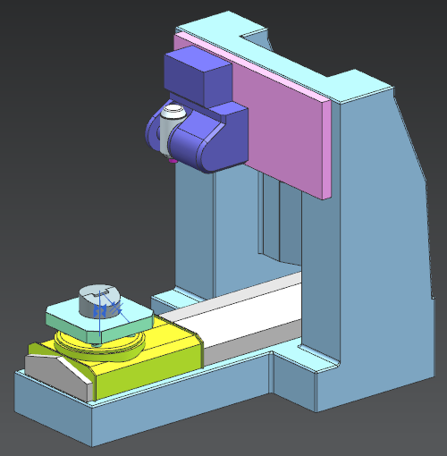

Estimated time to complete: 3–6 minutes
Setup assemblies that have a machine tool normally retain the kinematic structure that was originally retrieved. If someone updates the kinematic structure and you want to use the update in your setup, you must replace the machine tool with the updated copy.
In this activity, you will:
Perform the steps to replace a 5-axis machine tool with an updated copy.
Explore a new capability, the ability to configure columns in the machine tool navigator.
Use a new command that lets you remove a machine tool and return the setup assembly to the conditions that were present before the machine was added.

Open the Replace a machine and remove a machine activity.